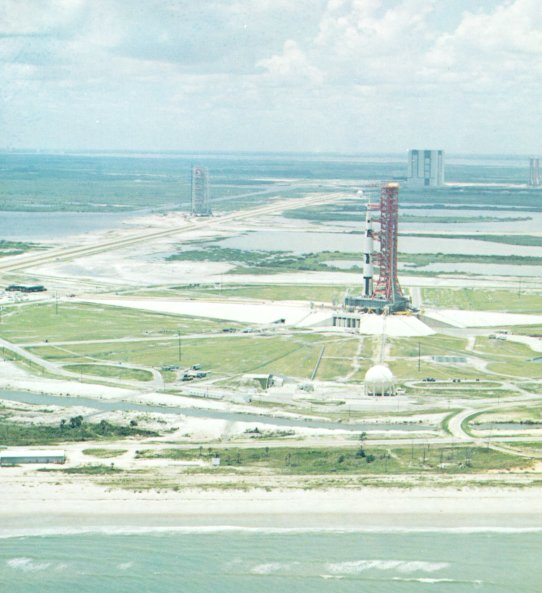
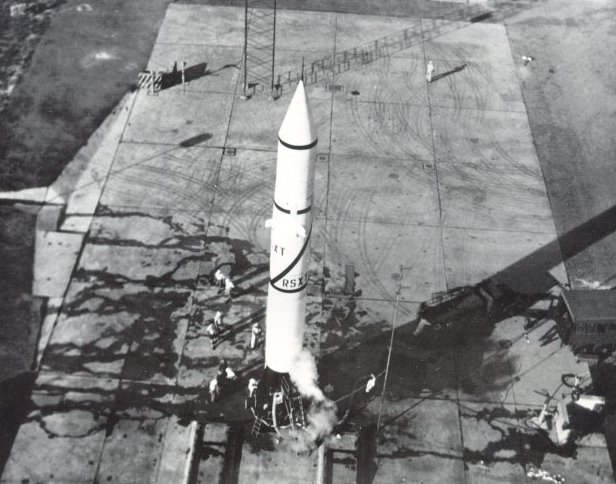
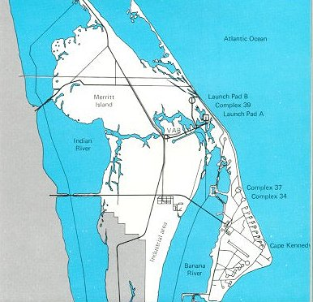
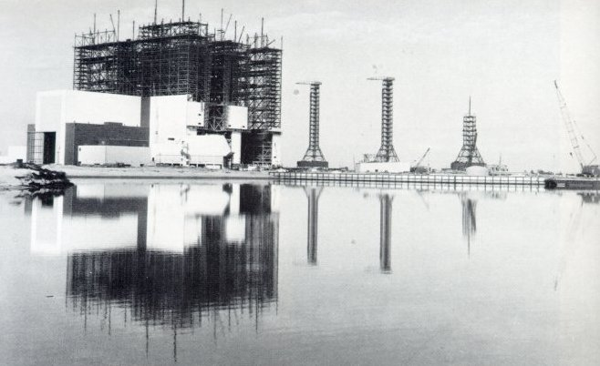
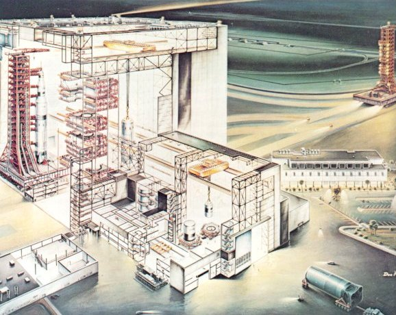
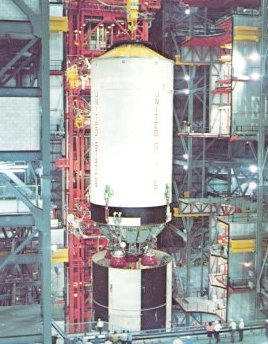
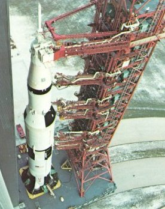

|  |
| Pad A of Launch Complex 39, shortly before a launch. The Mobile Service Structure is parked back by the crawlerway, the crawler separated, and only the Mobile Launcher is on the pad with the vehicle. |
|  |
| A launch pad looked different in the early days at the Cape. Here Redstone 4 is in final stages of preparation in August 1954. The plume of vapor at the base is oxygen boiling off, a hazard being ignored by the men at work; but the presence of an ambulance suggests awareness that all might not necessarily go well. Central sections of the deployment track are concreted, to keep exhaust gases from tearing up the pad. This launch was successful. |
|  |
| John F. Kennedy Space Center, on Merritt Island across the Banana River from Cape Canaveral, was acquired because the Air Force's launch complex at Canaveral did not provide the area needed for the Apollo program. |
|  |
| The Vehicle Assembly Building - an "intricate machine" to put rockets and spacecraft together - took shape early in 1965. In the foreground is the turning basin for barges to bring in giant rocket stages. At right three big Mobile Launchers are also abuilding. |
|  |
| In this super-barn, launch vehicles and spacecraft were delicately built up, interconnected in myriad ways, and then exhaustively checked out for any mismatch. |
|  | Lowering the second (S-II) stage of a Saturn V to mate with the first stage, which is already standing on the launcher. Here the camera is about 200 feet up in a high bay of the Vehicle Assembly Building. |
|  | Looking down at the space vehicle as it leaves the VAB on the base platform of the Mobile Launcher. The nine swing arms that run from the launcher's tower to the vehicle's various levels are in extended position. |